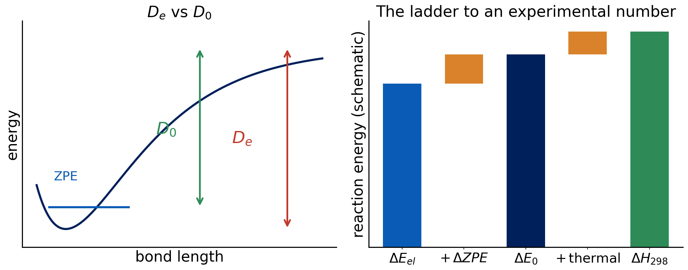

Lecture 13 · Debrief Exp. 8 · From electronic energies to experiment
ZPE, thermal corrections, bond energies and atomization, then Experiment 9
Advanced Physical Chemistry · Florida Institute of Technology
Debrief: Experiment 8
Your results
[Live: open Class results → Experiment 8 heatmap]
- Spin-state gaps of Fe and Ru⁺ with and without stability analysis
- Which cells changed? By how much?
[Insert class plot: energy lowering from stability analysis]
[Insert class plot: Experiment 8 energy-lowering table (E_plain − E_stab, kcal/mol) per functional and state]
[Insert class plot: errors before and after stability]
[Insert class plot: Experiment 8 signed error of the spin-state gaps for each functional, without vs. with stability analysis]
What you probably saw: stability analysis
- In many cases nothing changed: the first solution was already stable
- Where it did change, the energy dropped and the gap moved
- The lowering can be large for some states: the first SCF landed on a saddle point
- Stability analysis costs little compared with a wrong answer
Stable is not accurate
- After stability analysis the solution is a minimum of that functional
- Remaining errors are functional errors: DFT’s problem, not the SCF’s
- Spin-state energetics are a hard benchmark, with errors of several kcal/mol typical
- Converged and stable only means “the SCF did its job”
Why some functionals were dropped
- Several functionals often failed to converge on these atoms
- A method that fails is not “worse”; it is unusable for the task
- Transition-metal chemistry demands checking convergence for every state
Stability analysis removes SCF problems. It cannot remove functional error.
From ΔE_el to something you can measure
What Q-Chem gives you
- Total electronic energy at a fixed geometry (class 1)
- No zero-point motion, no temperature
- A reaction energy from these: ΔE_el = Σ νᵢEᵢ
- Experiment measures something else
The ladder of reaction energies

- ΔE_el: electronic
- ΔZPE → ΔE₀
- thermal → ΔH₂₉₈
- entropy term → ΔG
Zero-point energy
- Molecules vibrate even at 0 K
- ZPE = ½ Σ ħωᵢ (harmonic frequencies)
- It needs a frequency calculation (second derivatives)
- Breaking a bond loses vibrational modes: ZPE changes along the reaction
D_e versus D₀
- D_e: dissociation energy from the bottom of the potential well (electronic)
- D₀: from the ground vibrational level: D₀ = D_e − ΔZPE
- Spectroscopy measures D₀; a single-point calculation gives D_e
- Hydrogen-containing bonds have large ZPE differences
Thermal corrections
- At temperature T, add translation, rotation and vibration contributions
- From statistical mechanics: H(T) = E₀ + thermal terms + pV
- For a gas-phase reaction, Δn(gas) matters: e.g. dissociation of one molecule into two adds RT per extra particle
- ΔG adds the entropy term, −TΔS
Quick question
You compute a bond dissociation energy with a single-point calculation and compare with a tabulated experimental bond enthalpy at 298 K.
Name two corrections missing from your number.
ZPE (D_e → D₀) and thermal corrections (0 K → 298 K, including the pV term). For atoms and some radicals, spin–orbit effects too.
— Natural break: end of lecture A —
If you split the material over two meetings, stop here. Lecture B starts with a one-slide recap of ZPE and thermal corrections, then spin–orbit, atomization energies, NIST and the Experiment 9 briefing.
Spin–orbit and atoms
- Atoms with degenerate ground states (open shells, p or d) split by spin–orbit coupling
- Experimental references often include the spin-orbit-averaged or lowest-level energy
- A DFT energy with a single spin-adapted determinant does not include it
- Small for light atoms, larger for heavier
Atomization energies and formation enthalpies
- Atomization: molecule → free atoms. A very large number, hardest to match
- Enthalpy of formation: from elements in standard states, via experiment tables
- You cannot compare ΔE_el with a ΔH_f directly: they refer to different processes
- Convert via thermodynamic cycles using atomic enthalpies
Experimental uncertainties
- Experimental values have error bars (often tenths of a kcal/mol, sometimes more)
- Different experiments can disagree
- NIST Chemistry WebBook: a source for tabulated thermochemistry and spectroscopic data
- A calculation cannot be better than the reference to which you compare
ΔE_el → (ZPE) → ΔE₀ → (thermal) → ΔH₂₉₈. Compare like with like, or correct first.
Experiment 9 briefing
Goal
Experiment 9: Comparison with Experimental Results
- Bond dissociation and atomization energies with five methods
- Why radicals and atoms are hard
- Why a computed electronic energy cannot be compared directly with an enthalpy
Reactions and reference values
| Reaction | Ref. (kcal/mol) |
|---|---|
| (CH₃)₃C–OH → (CH₃)₃C· + ·OH | 115.02 |
| FeCl → Fe + Cl | 78.5 |
| H₂ → 2 H | 109.5 |
| CH₄ → C + 4 H | 420.4 |
| NH₃ → N + 3 H | 298.0 |
| H₂O → O + 2 H | 233.0 |
| O₃ → 3 O | 147.4 |
Multiplicities
| Species | Multiplicity |
|---|---|
| H, Cl, OH, (CH₃)₃C· | 2 (doublet) |
| C, O (atoms) | 3 (triplet) |
| N (atom) | 4 (quartet) |
| Fe (atom) | 5 (quintet) |
| FeCl | 6 (sextet) |
| closed-shell molecules | 1 |
Methods and settings
- Methods: MN15-L, MN15, B3LYP, PBE, HF
- Basis set: def2-TZVP
- Grid (99,590),
XC_GRID 000099000590 - Stability analysis on:
INTERNAL_STABILITY TRUE - Extra: B3LYP/6-31G* on the three tert-butanol species
Jobs
- 15 species × 5 methods = 75 jobs
- 3 additional B3LYP/6-31G* jobs for tert-butanol and its fragments
- 78 jobs
- The largest jobs (tert-butanol) are close to the 10-minute limit: submit early
Pitfalls
- Set multiplicities from the table: the default singlet is wrong for atoms and radicals
- Your result is ΔE_el. The NIST panel will show an enthalpy: you decide what is missing
- Check the stability output: did any job report an instability?
- Keep all digits of every total energy
Predictions to lock
- Which method will do best on bond dissociation? On atomization?
- How will HF do on atomization?
- Will FeCl be harder than tert-butanol?
References
- NIST Chemistry WebBook: https://webbook.nist.gov/chemistry/
- Seeger, R.; Pople, J. A. J. Chem. Phys. 66 (1977); Bauernschmitt, R.; Ahlrichs, R. J. Chem. Phys. 104 (1996): SCF stability.
- pchem2 textbook: https://peverati.github.io/pchem2/

CHM 5111 · Advanced Physical Chemistry · Florida Institute of Technology